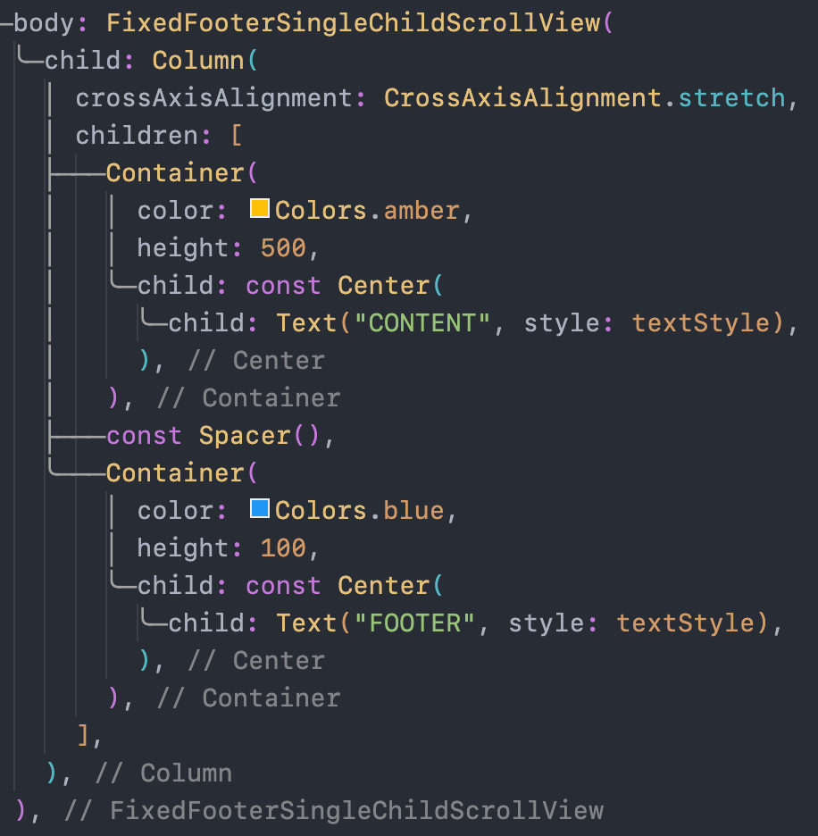

이 글에서는 vertical direction scroll을 가정한다.
Overview
Scrollable widget은 전체 content 높이가 화면 높이보다 작다면 scroll이 활성화되지 않고 content들이 상단 정렬된다. 아래는 SingleChildScrollView에 Column을 사용해서 content widget과 footer widget을 배치하는 예시이다.
| Code | Demo |
|---|---|
Footer widget을 화면 하단에 배치하기 위해 content와 footer widget 사이에 Spacer, Expanded와 같은 flexible widget을 사용하면 unbounded height error가 발생한다. Scrollable widget은 child widget에게 unbounded height constraint를 제안하는데, Spacer나 Expanded도 unbounded size를 갖기 때문이다.
Fixed Footer 구현
위 error를 해결하려면 아래와 같은 조건이 필요하다.
- Scrollable child widget의 최소 height는 content가 표시될 수 있는 화면 크기여야 한다.
- 최소 크기가 고정되어야 unbounded height error를 수정할 수 있다.
- 고정되는 크기가 화면 크기와 비슷하게 커져야 가운데
Spacer를 두고 footer widget이 하단에 고정될 수 있다.
- Scrollable child widget의 최대 height은 infinity 이어야 한다.
- 최대 무한대로 크기가 늘어날 수 있어야 화면 크기를 벗어나는 content에 대해 scroll을 활성화 시킬 수 있다.
이 조건을 만족시키기 위해 아래와 같은 widget들을 활용할 수 있다.
LayoutBuilder- Scrollable widget이 content를 보여줄 수 있는 최대 크기를 얻기 위해 사용한다.
- Scrollable widget을
LayoutBuilder로 감싸고,builder함수로 전달되는constraints를 scrollable widget의 child widget에서 사용한다.
ConstrainedBox- Parent widget으로부터 받은 constraint를 무시하고 child에 새 constraint를 부여한다.
- Scrollable widget은 parent로부터
0.0<=h<={screenHeight}의 height constraint를 받는데, 조건을 만족하기 위해 필요한 constraint는{screenHeight}<=h<=infinity이므로 constraint를 바꿔주어야 한다.
IntrinsicHeight- 새 constraint는 최대 높이가 infinity이므로 scrollable widget의 child widget height을 고정시키지 않으면
Spacer를 사용할 수 없다. IntrinsicHeight은 child widget의 height을 intrinsic height으로 고정시키므로,Spacer를 사용했을 때ConstrainedBox로 새로 설정한 constraint의 최소 높이로 고정될 수 있다.
- 새 constraint는 최대 높이가 infinity이므로 scrollable widget의 child widget height을 고정시키지 않으면
세 가지 widget을 아래와 같이 사용하여 footer를 하단에 고정시킬 수 있다.
ConstrainedBox에서 새로 설정한 constraint는 최대 크기가 infinity이므로 scrollable widget의 child widget의 높이가 screen보다 커질 수도 있다. 이 때, 일반 scrollable widget처럼 scroll이 가능하다.
| Content가 Screen 높이보다 작을 때 | Content가 Screen 높이보다 클 때 |
|---|---|
Custom Widget으로 만들기
Fixed footer를 만드는 boilerplate code를 custom widget으로 추출해서 재사용할 수 있다.
| Custom Widget | Example |
|---|---|
|  |